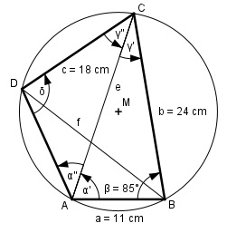

Aufgabe 162 Wie groß ist die Diagonale f des Sehnenvierecks?

Im Dreieck ABC: Fall SWS: Cosinussatz: e2 = a2 + b2 - 2 * a * b * cos β e2 = 112 + 242 - 2 * 11 * 24 * cos 85° e2 = 112 + 242 - 2 * 11 * 24 * 0,0872 e2 = 651 |√ e = 25,5 cm Fall SSW: Sinussatz: e a ------- = -------- |*sin γ’ sin β sin γ’ e * sin γ’ ------------- = a | *sin β sin β e * sin γ’ = a * sin β | :e a * sin β sin γ’ = ------------ = e 11 cm * sin 85° 11 cm * 0,9962 = ----------------- = ---------------- = 25,5 cm 25,5 cm = 0,4297 --> γ’ = 25,4° δ = 180° - β = 180° - 85° = 95° Im Dreieck ACD: Fall SSW: Sinussatz: e c ------- = -------- |*sin α’’ sin δ sin α’’ e * sin α’’ ------------- = c |*sin δ sin δ e * sin α’’ = c * sin δ | :e c * sin δ sin α’’ = ------------ = e 18 cm * sin 95° 18 cm * 0,9962 = ----------------- = ----------------- = 25,5 cm 25,5 cm = 0,7032 --> α’’ = 44,7° γ’’ = 180° - δ – α’’ = 180° - 95° - 44,7° = 40,3° γ = γ’ + γ’’ = 25,4° + 40,3° = 65,7° Im Dreieck DBC: Fall SWS: Cosinussatz: f2 = b2 + c2 - 2 * b * c * cos γ f2 = 242 + 182 - 2 * 24 * 18 * cos 65,7° f2 = 242 + 182 - 2 * 24 * 18 * 0,4115 = f2 = 544,4 |√ f = 23,3 cm